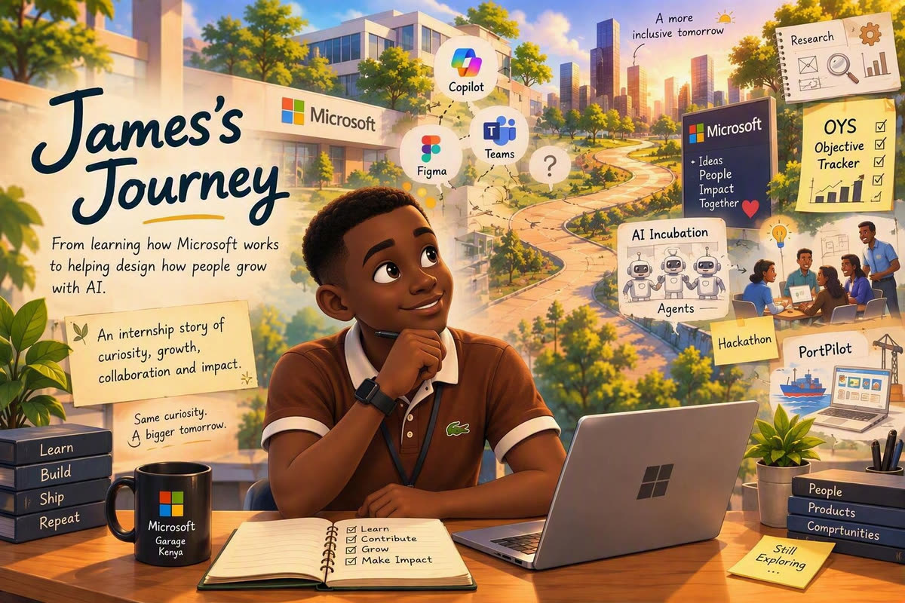

Hover to bring this moment to life

CHAPTER 01
Learning to Navigate a New World
Week one was mostly acronyms. New systems, new names, meetings full of context I did not have yet, and a real question about where an intern could usefully contribute.
I arrived ready to design. First I had to get comfortable not having the answers.